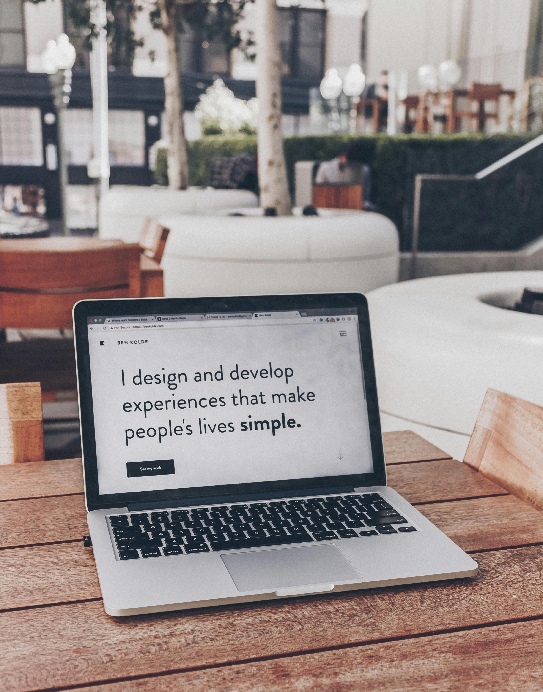

Front-end Developer
I am a senior computer science student with a strong interest in web development. I have worked on various projects, using HTML, CSS, and JavaScript to build interactive and user-friendly web applications. My experience includes developing games, calculators, and landing pages that are both functional and visually appealing.
Developer Based In Ethiopia
I am a senior Computer Science student at The University Of The People, passionate about using technology to solve real-world problems. My academic journey has equipped me with a strong foundation in algorithms, data structures, operating systems, and software engineering. I have hands-on experience in both front-end and back-end web development, with proficiency in HTML, CSS, JavaScript, and Python.
I am a self-motivated individual with a strong work ethic and a passion for learning. I am always eager to take on new challenges and learn new technologies. I am currently seeking opportunities to work as a Front-end developer, where I can leverage my skills to create innovative solutions and make a positive impact.

A Selection Of My Work
Built a guessing game using , HTML, CSS and JavaScript. it allows players to try up to 10 ten times and gives them hints to the right answer
LinkDeveloped an advice generator app using API JS CSS and HTML. The web app present users with a selection of advices.
LinkDeveloped a user-friendly Body Mass Index (BMI) calculator that allows users to quickly determine their BMI based on height and weight inputs. The calculator provides instant feedback on whether the user falls within underweight, normal, overweight, or obese categories.
LinkA zoomed eyedropper & color chooser tool that allows you to select color values and gives them back as hex values.
LinkThe Tip Calculator calculates tip amount for various percentages of the cost of the service, and also provides a total amount that includes the tip.
Link